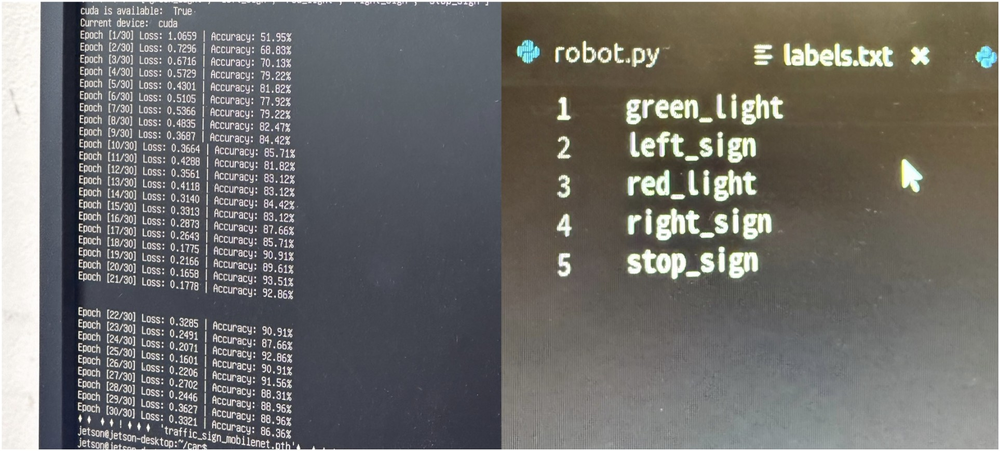

핵심 구현
01. 5종 교통표지판 데이터셋 구성
공개 이미지 데이터셋을 활용해 적색 신호등, 청색 신호등, STOP, 좌회전, 우회전의 5개 클래스로 학습 데이터를 구성했습니다. 각 클래스별로 15장 이상의 이미지를 확보하고 폴더별로 정리한 뒤, PyTorch의 ImageFolder를 활용해 클래스 라벨을 자동으로 적용했습니다.


02. MobileNetV2 모델 학습
ImageNet으로 사전 학습된 MobileNetV2의 마지막 분류층을 5개 클래스에 맞게 수정해 학습했습니다.
01 학습 설정
02 학습 방법
03 학습 결과

30 Epoch 학습 과정에서 정확도와 Loss 변화를 확인했으며, 최대 93.51%의 학습 정확도를 기록했습니다.
03. 실시간 인식-주행 제어 연동
CSI 카메라 영상을 실시간으로 입력받아 5종의 교통표지판을 분류하고, 인식 결과를 주행 상태 판단과 젯봇 속도 제어로 연결했습니다.
1. 실시간 영상 입력
CSI 카메라에서 주행 영상을 실시간으로 입력
frame = camera.read()
2. 이미지 전처리
224×224 Resize · Normalize · Tensor 변환
input = transform(frame)
3. 교통표지판 실시간 추론
0.2초 간격으로 MobileNetV2 추론을 수행하고, 신뢰도 0.3 이상인 결과를 주행 판단에 사용
confidence > 0.3
4. 주행 상태 판단
청색 신호 → 출발 / 적색 신호·STOP → 감속 후 정지
5. 목표 속도 기반 젯봇 제어
청색 신호 인식 시 목표 속도를 0.4, 적색 신호 또는 STOP 인식 시 0.0으로 설정
현재 속도를 0.05씩 단계적으로 증가·감소시켜 목표 속도에 도달하도록 제어
speed_step = 0.05